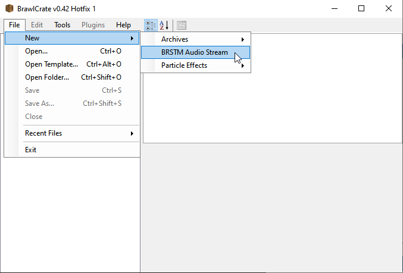
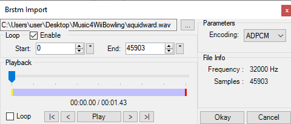
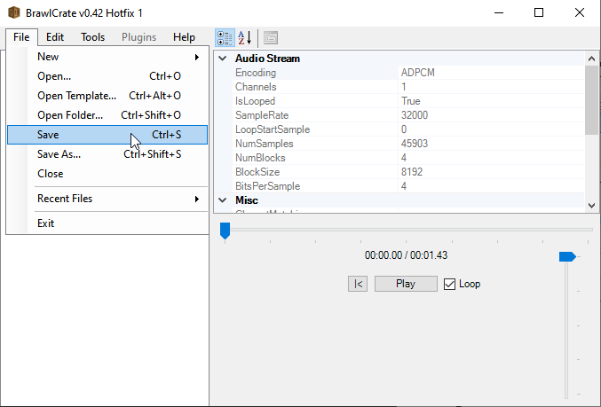

Your audio file must be in the .wav format. If you come across a .brstm file,
then you will have to check if it has the looping attribute set. You can do so by loading the file in
BrawlCrate.
Other Software
Audacity will be featured, but is not required.
In-Game .brstm files
In order:
10 Pin: Bow_ingame_Amb.ry.32.brstm
100 Pin: Bow_ingame_100_Amb.ry.32.brstm
Spin Control: Bow_ingame_tech_Amb.ry.32.brstm
Notice the difference in each file name: _100 for 100 pin,
and _tech for Spin
Control.
Basic
Basic 1: Simple Drag and Drop
This is the simplest way to add music. It involves already having a .brstm file. https://smashcustommusic.net/ is one such site to find
.brstm files. It is important that the file has looping enabled, or it will end with
silence.
Step 1
Place the .brstm file in the folder that is specified in the Riivolution .xml
file. Make note of the path location of the .brstm file.
Step 2
This is the important part. The Riivolution .xml file. There are three bowling modes, so
there are three tracks to replace. There are three options:
All the same track
All different tracks
Mix and match
It all depends on how the xml structured. The only error one may make, is of reference to
two or more replacement .brstm files for the same track.
Here is the first part for the selection screen:
<option name="Music?">
<choice name="MySong">
<patch id="toggle" />
</choice>
</option>
Here is the second part to apply the changes:
<patch id="toggle">
<file disc="/Sound/Static/stream/Bow_ingame_Amb.ry.32.brstm"
external="/MyFolder/MySong.brstm" offset="" size="0x3938700" />
<file disc="/Sound/Static/stream/Bow_ingame_100_Amb.ry.32.brstm"
external="/MyFolder/MySong.brstm" offset="" size="0x3938700" />
<file disc="/Sound/Static/stream/Bow_ingame_tech_Amb.ry.32.brstm"
external="/MyFolder/MySong.brstm" offset="" size="0x3938700"/>
</patch>
or
<option name="10 Pin">
<choice name="MySong1">
<patch id="10pin" />
</choice>
</option>
<option name="100 Pin">
<choice name="MySong2">
<patch id="100pin" />
</choice>
</option>
<option name="Spin Control">
<choice name="MySong3">
<patch id="spincontrol" />
</choice>
</option>
and
<patch id="10pin">
<file disc="/Sound/Static/stream/Bow_ingame_Amb.ry.32.brstm"
external="/MyFolder/MySong.brstm" offset="" size="0x3938700" />
</patch>
<patch id="100pin">
<file disc="/Sound/Static/stream/Bow_ingame_100_Amb.ry.32.brstm"
external="/MyFolder/MySong.brstm" offset="" size="0x3938700" />
</patch>
<patch id="spincontrol">
<file disc="/Sound/Static/stream/Bow_ingame_tech_Amb.ry.32.brstm"
external="/MyFolder/MySong.brstm" offset="" size="0x3938700"/>
</patch>
The patch id has to match both times, it the option/choice and patch tags. Make sure the external value
matches the path noted from before. The first set shows all three tracks replaced under one option for
simplicity. The second set shows individually set tracks for the most customizability. The last and most
important piece: size="0x3938700". It allows the file 60mb (60 million bytes in
hexadecimal) of memory space in ram. This allows most songs to not cut off.
Basic 2: .wav conversion
This will go over the simple process of a basic custom .brstm file.
Step 1

Figure 1
Have your .wav file ready. Refer to Figure 1. Open BrawlCrate. Select the "File"
tab, hover over the "New" submenu, and select "BRSTM Audio Stream". Locate your .wav file
in the popup file selection window.

Figure 2
Refer to Figure 2. Make sure that the "Loop" checkbox is ticked. For a .brstm file,
the "Frequency" has to be 32000 Hz. If this is a different number, we will be using
Audacity to fix it. "Samples" is the length of the .brstm file. If you want to trim the
file in half, you divide by two and input it into the "End:" box. "Start:" is the start of the loop. It
is easier to use Audacity to find a point with reference to "Samples". When done, click "Okay".

Figure 3
Figure 3 just shows how to save. Select the "File" tab and click "Save".
Step 2
Refer to Basic 1. It explains how to insert the .brstm file.